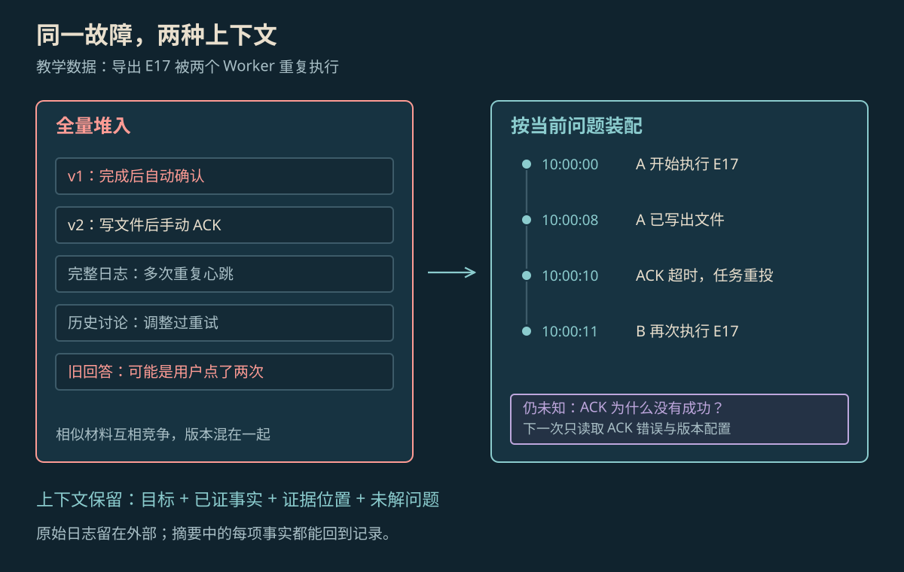

CONTEXT ENGINEERING
上下文工程原理
上下文工程决定每次给模型看什么：选出相关资料，分清事实和猜测，保留任务进度，并及时更新已经过时的内容。
本页目录
上下文工程是什么#
上下文（Context）就是模型这一次能看到的信息，例如用户的问题、任务要求、之前的对话、可用工具，以及刚查到的资料。上下文工程要做的是：为当前这一步选好资料，排清顺序，并在任务继续时更新它们。[1]
写好提示词是在说明“请你怎样做”；上下文工程还要回答“这一步需要看什么”。数据库里即使保存了很多资料，模型也不会自动知道。负责运行的程序要先找出相关内容，再放进这一次输入。
模型这一步需要看哪些信息#
| 信息 | 有什么用 | 例子 |
|---|---|---|
| 要求与目标 | 说明要完成什么、不能做什么 | 用户需求、输出格式、业务规则 |
| 任务进度 | 说明已经做了什么、还缺什么 | 已完成步骤、待查问题 |
| 工具说明 | 告诉模型能用什么工具、参数怎样填 | 工具名称、用途、参数规则 |
| 查到的资料 | 为结论提供可以核对的依据 | 文档片段、日志及来源位置 |
| 相关历史 | 补充当前任务用得到的旧信息 | 必要对话、进度摘要、以前保存的记录 |
不同信息的作用不能混在一起。网页里的一句命令只是网页内容，不能直接变成用户要求；模型的猜测不能写成工具已经证实的事实。删减资料时，也要保留结论所依赖的版本号和来源。
资料怎样进入下一次调用#
- 先找相关资料：按当前问题读取文档或日志，排除版本不对、对象不对和没有访问权限的内容，再去掉重复部分。
- 把资料说明白：写清哪些是事实、哪些是猜测、哪些还不知道，并保留来源、日期和版本。
- 交给模型处理：模型根据这些输入回答，或提出下一次工具调用。
- 更新任务记录：把新结果补进去，划掉已经被推翻的猜测，再准备下一次输入。
更新不等于一直往后追加。早期猜测可能已经错了；一大段工具返回也可能只有几行与下一步有关。程序可以先给出相关片段和完整文件位置，等需要细查时再读取。已经结束的步骤则可以缩成进度摘要，避免反复重读。[1]
示例：为重复导出问题准备资料#
以下是教学例子：导出任务 E17 生成了两份文件。执行程序 Worker A 在 10:00:08 写出第一份文件，负责分发任务的队列服务在 10:00:10 因未收到 ACK（处理完成后的确认消息）而重新派发，Worker B 在下一秒再次执行。调查要分清两个问题：为什么重新派发，为什么又生成了一份文件。

放大查看 ↗这一步应提供当前 queue-worker 2.1 的确认规则和相关日志，排除旧版“自动确认”说明。下面的记录把已经查明的事与还要查的事分开：
{
"goal": "解释 E17 的重投与重复执行",
"runtime_version": "queue-worker 2.1",
"facts": [
{"claim": "A 已写出文件", "source": "worker-a.log:318"},
{"claim": "队列随后重投", "source": "queue.log:92"}
],
"unknown": ["ACK 为什么没有成功"],
"next_read": ["ack-errors.log", "worker-2.1.yaml"]
}继续读取后，日志显示 A 发出 ACK 时，用来证明身份的认证令牌已经过期。此时才能补上原因和来源：令牌过期解释了重新派发；B 没有拦住同一任务的重复执行，解释了第二份文件。它们是两个环节，不能只归结为“用户点了两次”。
怎样压缩历史而不改错意思#
压缩就是把长过程缩成下一步仍能使用的记录。至少应保留目标、重要要求、已确认事实、来源位置和待查问题。不能只留下“任务已完成”：写出文件不代表队列确认成功，“没找到 ACK 记录”也不代表“ACK 执行失败”。
原始记录应与摘要分开保存，必要时还能回头核对。任务进度用来接着做当前工作；长期记忆保存以后也可能用到的信息。MemGPT 把资料放在不同存储位置，再按需读入模型输入，是这种做法的一种研究实现。[3]
窗口有限，应该留什么#
上下文窗口是模型一次能处理的 token 数上限。token 是模型处理文字的小片段，不等于一个汉字或一个单词。除了当前输入，还要为模型输出和后续工具结果留出空间，因此不能把所有材料都塞进去。
更大的窗口能装下更多内容，却不保证每条资料都被正确使用。Lost in the Middle 论文把相关资料放在输入的不同位置，观察到测试表现会变化；这个结果不能当作所有模型都遵守的固定规律。[2]整理输入时仍要优先保留决定答案的资料，减少重复日志、过时说明和已经被否定的猜测。
怎样检查整理是否有效#
对 E17，可以准备三种输入：完整日志；只含当前版本的相关记录；相关记录加任务进度摘要。分别检查答案有没有引用正确事件、有没有把“原因未知”说成确定原因，以及补查后是否分清两个故障环节。同时记录输入量与调用成本。
日志根本没找到，就检查查找方式；日志找到了却被摘要删掉，就检查删减规则；资料齐全但结论仍超出资料，就检查判断和交付要求。只看输入是否变短，无法区分这些问题。
参考资料
论文、官方文档与案例依据。
- [1]Effective context engineering for AI agents ↗
Anthropic，2025-09-29；上下文装配与维护的工程方法。
- [2]Lost in the Middle: How Language Models Use Long Contexts ↗
Liu 等；长上下文证据位置的实验研究。
- [3]MemGPT: Towards LLMs as Operating Systems ↗
Packer 等；分层记忆与虚拟上下文管理。